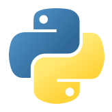
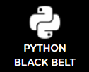
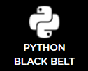
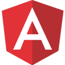
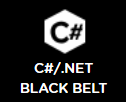
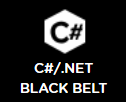

Overview:
I am a full stack developer whose background emphasizes communication and interpersonal skills. I use online resources, teamwork and internal drive to accomplish tasks in the most efficient, clean manner available. Prior to attending bootcamp I designed and coded a front-end website visited by 1000s, even ran complex OOP simulations in Python; since then both my abilities and knowledge have grown dramatically. Because of my love for algorithms and multifaceted complexity, I am seeking a back-end or full-stack position. Ideally, this position would be as part of a small team – inside or out of a larger company - with whom I could both develop and prove my skills.
Education:
Coding Dojo
Web Development
Triple 'Black' Belt
Coding Dojo helped me to gain an unbelievable amount of knowledge in a shockingly short period of time. On average I coded in 14 hours per day during the week, and 4 hours on weekends every day for 15 weeks. Well over a thousand hours in addition to what I had learned previously.
The curriculum consists of ~200 unique and increasingly difficult whiteboarding sessions, dozens upon dozens of small projects leading up to 3-5 larger culminating projects each stack, 3 exams and 3 project weeks.
Each exam requires the student to complete a full stack application, simplified versions of IMDB, LinkedIn, etc. in 4.5 hours. Usually involving multiple SQL relationships, 4-5 unique pages and full CRUD. Each exam has both harder (black) and easier (red) versions, and is given three times before failure. I achieved three 'black-belts' each at the first opportunity.
Washington State University
BA Political Science
3.66 GPA
Although I took an unrelated degree, during my time at Washington State University I acquired a number of skills in addition to a general mental improvement. Most notably the ability to balance a myriad of responsibilities simultaneously (full courseload, twenty hours of work per week, VP of Pre-Law Society and PR chair for my fraternity). I also became much better at intelligently planning large scale projects, working in groups, and learning how to learn.
Some courses were related however, including Intro to Logic, Calculus, and *Intro to Computer Science and Programming
DJANGO

 

MEAN


ASP.NET

 

ADD'TL